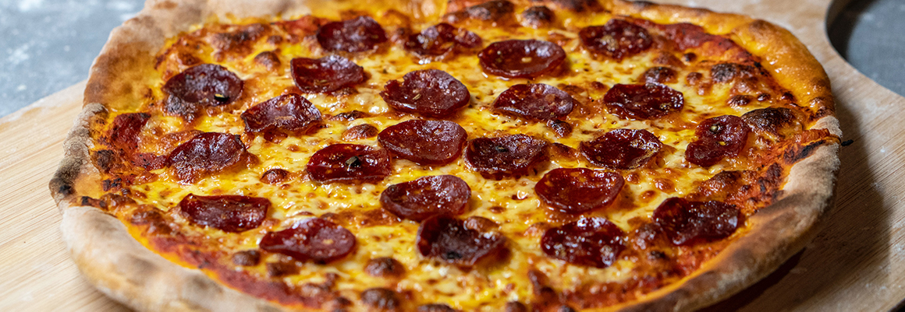

A list of pizza places in San Francisco, California.
This is meant to be a comprehensive and neutral list of pizza that can be found in San Francisco. Pizza places are
listed by neighborhood. Neighorhoods listed below are using the
borders used by the SF Planning Department. This
is not the most comprehensive neighborhood list but was sufficient for use here. If a restaurant has more than 3
locations it’s listed at the bottom in
Multiple Locations section.
Be sure to check the Types of Pizza page for an explanation of each style
of pizza.
⚠️This is still a work in progress⚠️
Add your suggestions, corrections, and changes on GitHub!

Map
By Neighborhood
Bernal Heights
Castro/Upper Market
Civic Center
Dogpatch
Financial District
Glen Park
Haight Ashbury
Inner Richmond
Inner Sunset
Marina
Mission
- 🍕 Style: Unknown
- 📍 Google Maps
- 📝Details: Checkout the Honorable Mention review of Serrano’s by J. Kenji López-Alt here.
Multiple Locations
- 🍕 Style: Chicago deep-dish, Chicago thin-crust
- 📍 Google Maps
Noe Valley
North Beach
- 🍕 Style: Sicilian
- 📍 Google Maps
- 📝Details: Golden Boy Pizza founder Peter Sodini calls his pizza “Sanfrancilian”.
- 🍕 Style: New York, New Haven, Sicilian, Grandma, Detriot, Chicago deep-dish
- 📍 Google Maps
- 🍕 Style: Neapolitan, California, New York, Romana, Grandma, Sicilian, New Haven, St. Louis, Detroit, Trenton tomato pie
- 📍 Google Maps
Outer Richmond
Outer Sunset
Pacific Heights
Parkside
Russian Hill
- 🍕 Style: Chicago deep-dish, Chicago thin-crust, Detriot, Stuffed, Pan
- 📍 Google Maps
South of Market (SoMa)
West of Twin Peaks
Western Addition
- 🍕 Style: New York/California
- 📍 Google Maps
- 📝Details: Gioia calls themselves a New York style pizzeria but their toppings and seasonal ingredients makes their pizza closer to California style so I’ve listed both but they only sell one kind of pizza.